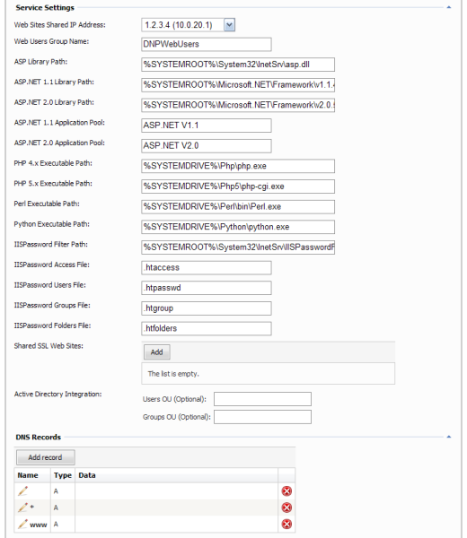

Microsoft IIS 6.0 Provider Settings

Web service is required to host customer web sites. Currently, only IIS 6.0 web service is supported by WSP.
Make sure you have correctly setup IIS 6.0 to host ASP, ASP.NET, PHP and other types of web applications. Please, see this guide for the information how to setup IIS 6.0.
-
Web Sites Shared IP Address - This IP address will be used for all name-based web sites created on this service. This is mandatory field.
-
Web Users Group Name - Specify (or leave the default value) the name of "Web Users" group. This is system group to which all web site anonymous accounts will be added.
-
Users OU and Groups OU - Optionally, if your server is enabled for Active Directory you can specify the names of organizational units (OU) where web site anonymous accounts, FrontPage user accounts and "Web Users" group will be created. It is recommended to specify organizational units if WSP works in AD environment.
-
ASP Library Path - the path to classic ASP 3.0 IIS ISAPI. If this path is specified and "ASP" extensions is enabled in hosting plan ASP 3.0 ISAPI will be mapped to ".asp" extension.
-
ASP.NET 1.1 Library Path - the path to ASP.NET 1.1 IIS ISAPI. If this path is specified and "ASP.NET 1.1" extensions is enabled in hosting plan ASP.NET 1.1 ISAPI will be mapped to ".aspx" and other ASP.NET 1.1 extensions.
-
ASP.NET 2.0 Library Path - the path to ASP.NET 2.0 IIS ISAPI. If this path is specified and "ASP.NET 2.0" extensions is enabled in hosting plan ASP.NET 2.0 ISAPI will be mapped to ".aspx" and other ASP.NET 2.0 extensions.
-
ASP.NET 1.1 Application Pool - the name of the IIS application pool where all ASP.NET 1.1 web sites and virtual directories will be placed to.
-
ASP.NET 2.0 Application Pool - the name of the IIS application pool where all ASP.NET 2.0 web sites and virtual directories will be placed to. Make sure it doesn't have the same name as ASP.NET 1.1 pool as both ASP.NET 1.1 and 2.0 applications can work in the same pool.
-
PHP 4.x Executable Path - the path to PHP 4.x CGI (.exe) or ISAPI (.dll) module. If this path is specified and "PHP 4.x" extensions is enabled in hosting plan PHP 4.x ISAPI or CGI will be mapped to ".php" extension.
-
PHP 5.x Executable Path - the path to PHP 5.x CGI (.exe) or ISAPI (.dll) module. If this path is specified and "PHP 5.x" extensions is enabled in hosting plan PHP 5.x ISAPI or CGI will be mapped to ".php" extension.
-
Perl Executable Path - the path to Perl CGI (.exe) or ISAPI (.dll) module. If this path is specified and "Perl" extensions is enabled in hosting plan Perl ISAPI or CGI will be mapped to ".pl" extension.
-
Python Executable Path - the path to Python CGI (.exe) or ISAPI (.dll) module. If this path is specified and "Python" extensions is enabled in hosting plan Python ISAPI or CGI will be mapped to ".py" extension.
Secured Folders
WSP has an ability to secure web site folders and files. Secured folders and files are based on popular Troxo IISPassword. This program is free and can be download from this location: http://www.troxo.com/products/iispassword/
-
IISPassword Filter Path - the path to IIS Password ISAPI filter. If this path is specified and "Secured Folders" option is enabled in hosting plan IISPassword filter will be installed to web site.
-
IISPassword Access File - the name of "access" file that will be created by WSP. The default name is ".htaccess".
-
IISPassword Users File - the name of "users" file that will be created by WSP. The default name is ".htpasswd".
-
IISPassword Groups File - the name of "groups" file that will be created by WSP. The default name is ".htgroup".
-
IISPassword Folders File - the name of "folders" file that will be created by WSP. The default name is ".htfolders".
Shared SSL Web Sites
You can define on web service level which web sites have SSL certificate installed and can be selected by customers on "Shared SSL Folders" screen.
You should specify descriptions of web sites as displayed in IIS admin tool (web site's "Description" property). WSP does not install SSL certificates to those sites automatically and you should install them manually.
DNS Records
When you add web service the list of DNS Records is pre-filled with three "", "*" and "www" A records. "Data" field for those records is empty, because WSP will use Shared IP (or dedicated IP) address as a record data when creating a new DNS zone. You may specify additional A records here, e.g. "www2" to allow customers accessing their sites by "www2.mydomain.com".